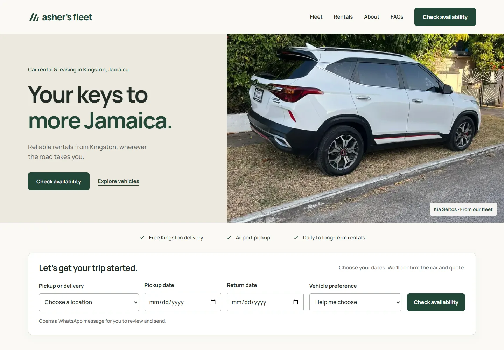
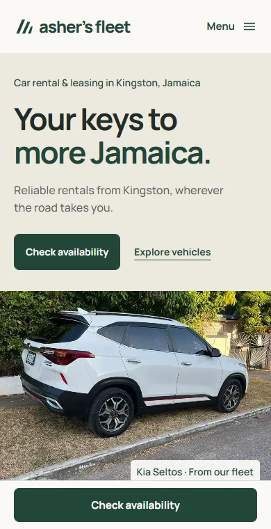

Rental website / Live website
Asher’s Fleet
A clearer path from vehicle browsing to a rental enquiry
Designed across screens
The same customer journey, composed for desktop and mobile. These are actual website captures from 1 October 2026.
Desktop

Mobile

01 Context
A car-rental website connecting vehicle choice, travel dates and pickup plans to a customer-reviewed WhatsApp enquiry.
02 Problem
Renters need to compare vehicles and share enough detail for a useful availability conversation.
03 Idea / Thinking
Keep the website focused on the choice and the enquiry, with the rental team confirming availability and terms.
04 My Role
Content structure, enquiry-flow planning, visual direction and AI-assisted website development.
05 What I Built / Did
A six-model vehicle collection, individual vehicle pages, rental guidance, FAQs and a structured availability enquiry.
06 Output
A live responsive website with WhatsApp enquiry handoff.
07 Evidence
The enquiry prepares a WhatsApp message for the customer to review and send. Availability and booking are confirmed by the rental team.
08 Status
Published website.
09 Learning / Next question
How can the next iteration make the enquiry journey clearer?